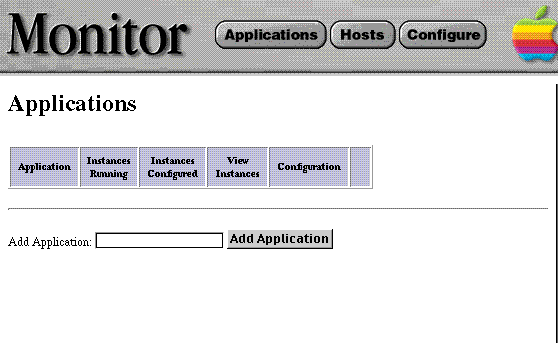

Table of Contents
Table of Contents  Next Section
Table of Contents
Next Section
Table of Contents  Previous Section
Previous Section
Use Terminal.app on Mac OS X Server and the Bourne Shell program on Windows NT.
cd Library/WebObjects/Applications/Monitor.woa Monitor
When the Monitor application launches, it usually opens the default web browser and displays the Applications Page by default:

Table of Contents Next Section